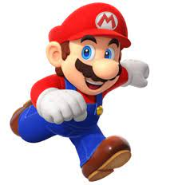

SOBRE
Super Mario é uma série de jogos eletrônicos de plataforma, criada pela Nintendo, baseada e estrelada pelo encanador fictício Mario. Alternativamente chamada de série Super Mario Bros. ou simplesmente série Mario, é a série central da ampla franquia Mario
PLATAFORMAS
- Game & Watch
- NES
- Famicom Disk System
- Arcade
Instagran /
Twitter /
Facebook